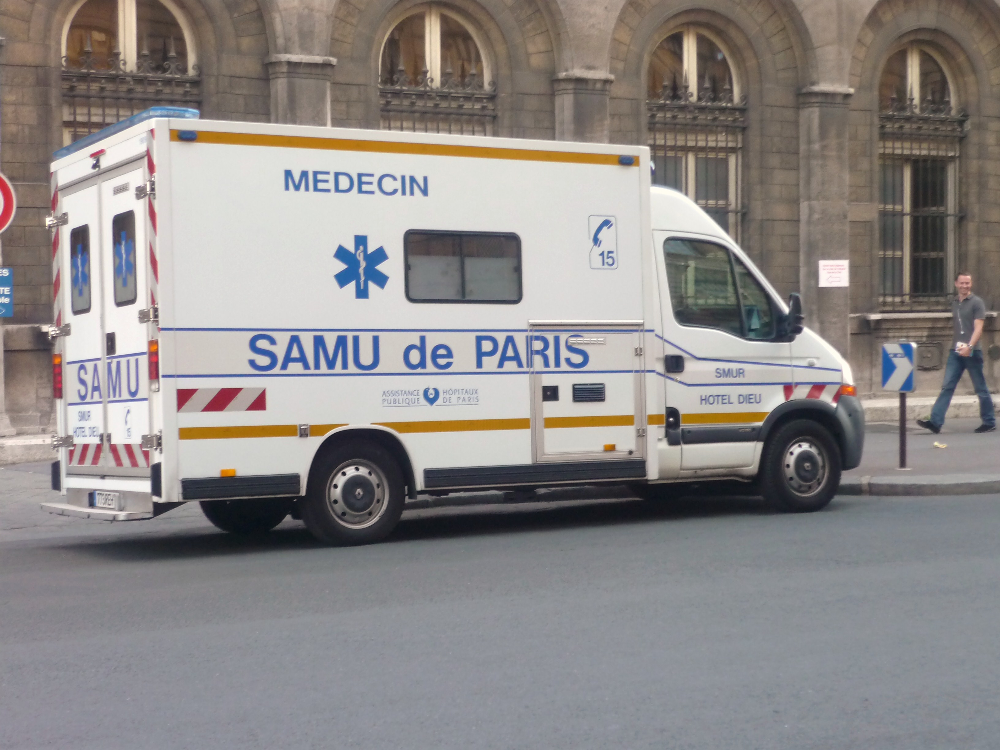
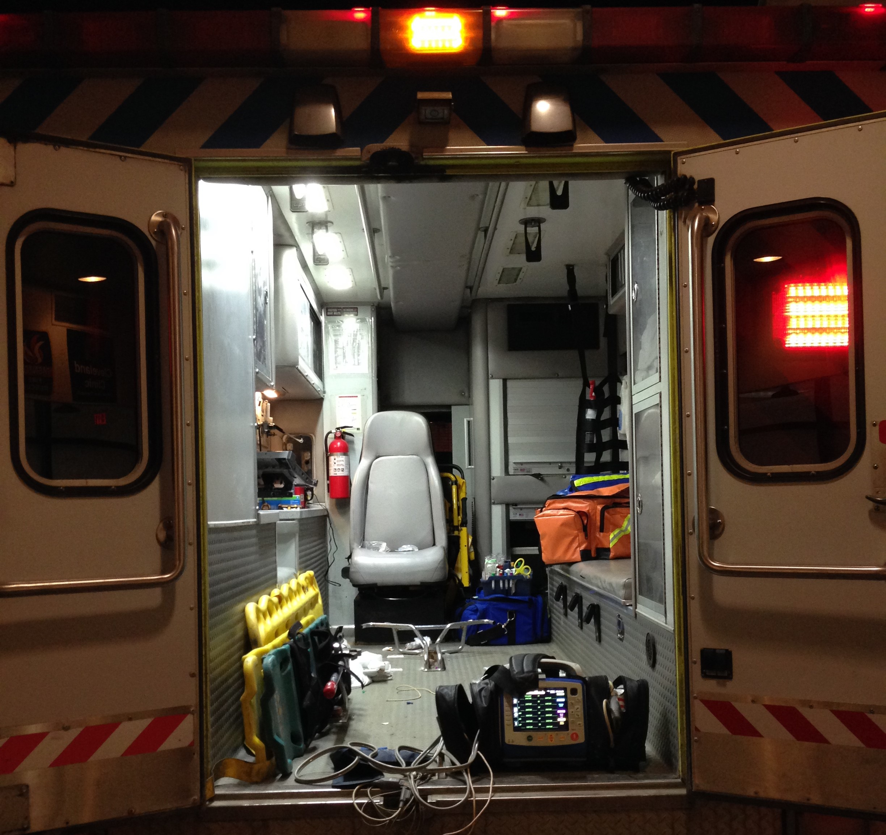

Préparer le départ
Vérifier le véhicule et le matériel, puis installer le patient en tenant compte de son état et de ses besoins.
Orientation · Transport sanitaire
Installer un patient, le rassurer et veiller sur lui jusqu’à son arrivée. Découvre un métier où la prise en charge commence dès le trajet.

Explorer le dossier
Sur le terrain
L’ambulancier prend en charge des personnes malades, blessées ou en situation de handicap. Il intervient lors de transports programmés, par exemple pour une consultation, et lors de certaines urgences.
Vérifier le véhicule et le matériel, puis installer le patient en tenant compte de son état et de ses besoins.
Conduire avec souplesse, expliquer le déroulement du trajet et surveiller l’état de la personne transportée.
Transmettre les informations utiles à l’équipe qui accueille le patient, puis nettoyer et remettre en état le matériel.
Les qualités du métier · Écoute, sang-froid, rigueur et esprit d’équipe. Selon le poste, les horaires peuvent inclure des nuits ou des week-ends.

En France
Le diplôme d’État d’ambulancier (DEA) se prépare dans un institut de formation. On y apprend notamment à installer et déplacer un patient, à évaluer son état et à respecter les règles d’hygiène.
Le professionnel peut travailler dans une entreprise de transport sanitaire ou en milieu hospitalier. Le permis B fait partie des conditions d’accès à la formation.
Explorer la formation →Le savais-tu ?
Le chirurgien militaire Dominique-Jean Larrey utilisait des voitures tirées par des chevaux pour évacuer rapidement les blessés vers les soins. Leur nom évoquait leur rapidité.
Une association a reconstruit un attelage à partir des plans et descriptions d’époque, avec l’aide d’artisans. La réplique sert à des reconstitutions et à des commémorations.
À toi de jouer
5 questions faciles sur le métier. Choisis une réponse et découvre son explication avant de passer à la suivante.
Références
Photos Wikimedia Commons · Ambulance à Paris, Muffingg (CC BY-SA 3.0) · Intérieur d’une ambulance, Tsommerfelt (CC BY-SA 4.0). Cadrage adapté à la mise en page.